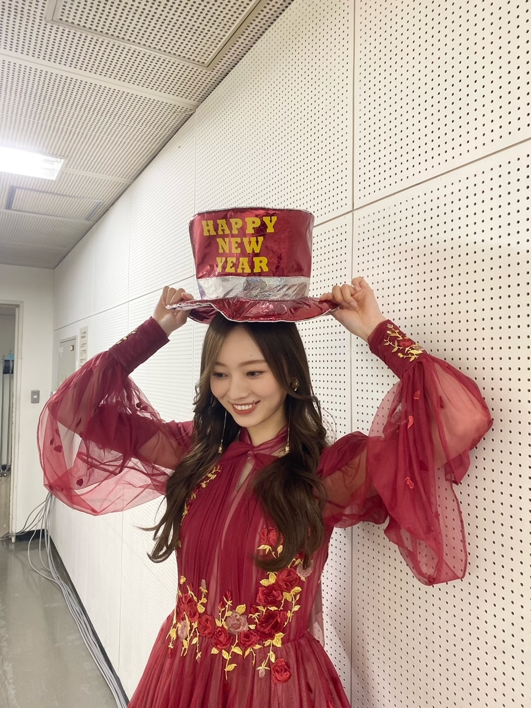
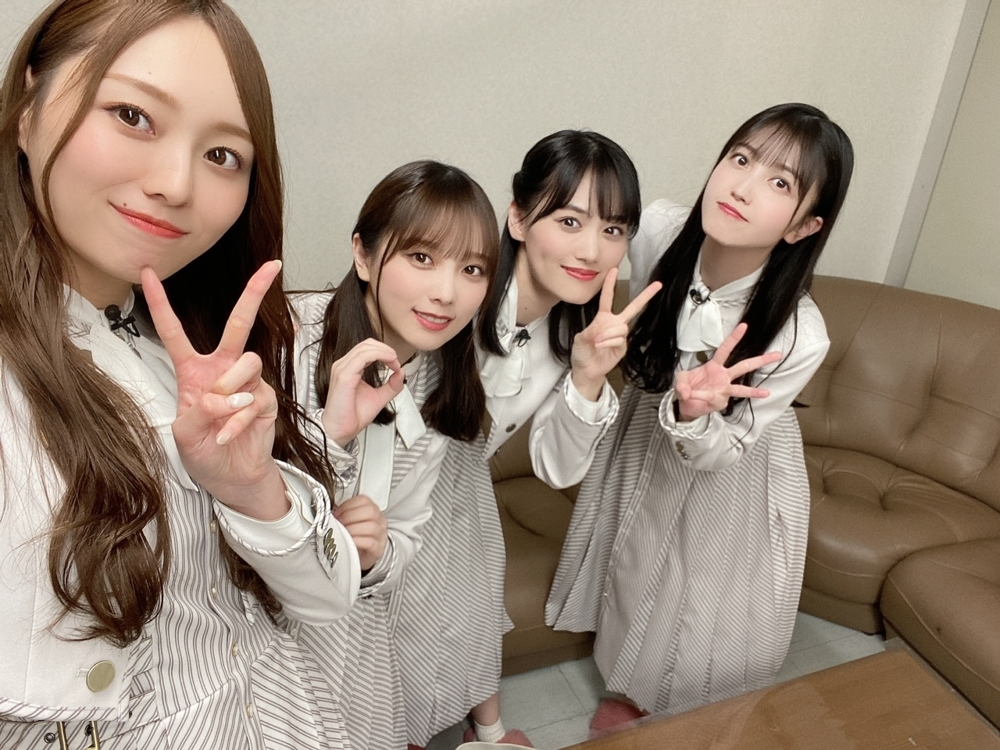
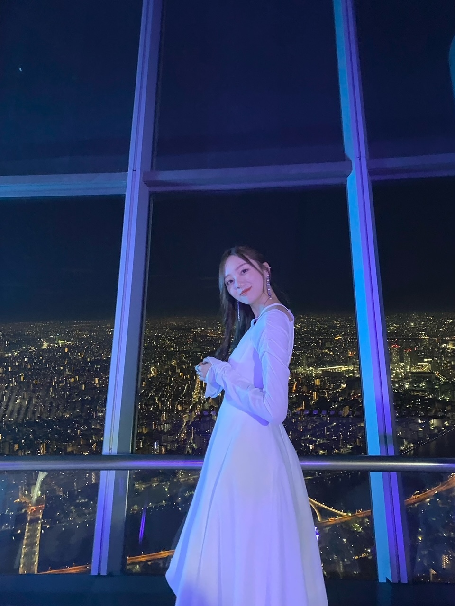
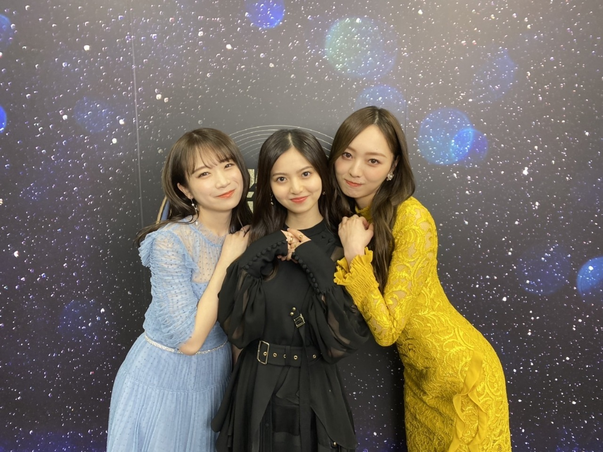
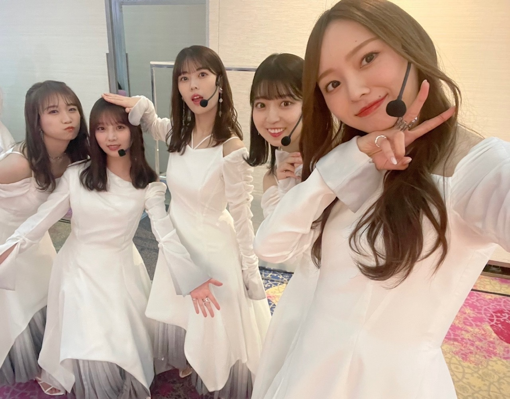

まとまらないですが、年が明けたら兎年、年女です。
だいぶお久しぶりになってしまいました。
いかがお過ごしですか？

大晦日、ゆっくりしてますか？
お仕事の方もいるよね、お疲れ様です。
みんな何して過ごすのだろう、
気になります。
１２月に入ったくらいからかな、
楽屋の雰囲気とか、皆のテンション感とか、
年末に近づくとなんだか変な所があって
かわいくて好きでした（笑）
自分も例外ではなく、
ずっとお喋りしてます。
お喋りノンストップ。
ほんとにテンション感が自分でもよく分からず
ボケたりつっこんだりふざけたり
それがなんか楽しくて、でもなんか違和感で、
面白かった〜

皆ちゃんとひろってくれるから
ふざけがいがある(^^)
なんだ、ふざけがいって（笑）
明日元旦、
１７時〜テレビ朝日系｢芸能人格付けチェック｣
この４人で頑張ってきましたので
ぜひ、見守っててくださいな
なんせこの番組の大ファンなので
とても幸せな時間でした。楽しかった！
歳をとるのも臆病になってきたし
大人になったと思っていた内面も
全然変わらないとこ、あるみたいで。
びびりだし、度胸ないし（笑）
変わったのは
それを隠せる力と、味覚くらいでした（笑）

夜景を見ると未だに、
東京にいてるんやなあ…と感じます。
７年目の冬になります！
「ここにはないもの」
たくさん聴いてくださってますでしょうか！
２番の歌詞にある、
「カーテンを閉め太陽とか社会と向き合わなきゃ」
私の歌割りでもあるのですが、
開けて、向き合わなきゃ！じゃなくて、
閉めて、"向き合わなきゃ。"と歌うフレーズ、
すごくリアルで、すきです。
主人公の心情が見えるようで！
歌詞の読み取り方は人それぞれで、
だからこそ話していると楽しいし
新しい発見も色々(^^)
人の価値観が垣間見える瞬間が好きで
感化されて 人と接することの大切さに気づかされたりします。
私の周りにはすごい人ばかりだからなあ

WEIBO Account Festival ２０２２
優秀女性グループ賞をいただきました。
4度目の受賞、本当に嬉しく思います。
このグループでいられるのも、
たくさん愛を届けてくださる方がいるのも！
いつも応援ありがとうございます！
２０２２年、
改めてありがとうございました。
どんな１年でしたか？
今年はファンの皆様と顔を合わせる機会が
とても多かったように感じます。
直接会って、より
安心感や自信に変わっていく存在です。
一緒に大きな夢を叶えてくれてありがとうございました。
来年はもっとたくさん
会いましょう、笑いましょう、楽しみましょう(^^)
これからも、一緒に！

みんな可愛くて
毎日が癒し！
振り返りは
毎年恒例のトークとモバメでたっぷりします。
年始そうそう通知多かったらすんません、
オフにしながらゆっくりみてね
またすぐ、かきます
Original：https://www.nogizaka46.com/s/n46/diary/detail/101017?ima=4932&cd=MEMBER